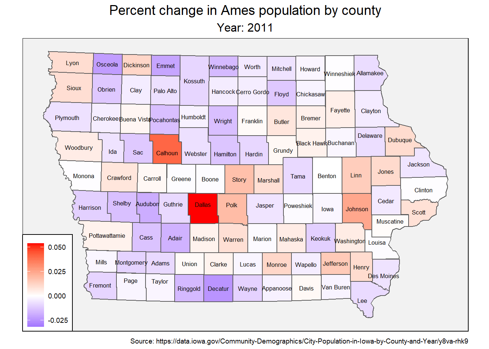

library(dplyr)
library(ggplot2)
library(sf)
library(janitor)
library(tidyverse)
library(tmap)
library(lubridate)
library(gganimate)Data sources:
iowa.sf <- st_read('data/county') %>%
clean_names() %>%
st_simplify(dTolerance = 500)## Reading layer `county' from data source `C:\Users\pvill\repos\random\data\county' using driver `ESRI Shapefile'
## Simple feature collection with 99 features and 10 fields
## geometry type: POLYGON
## dimension: XY
## bbox: xmin: 202073.8 ymin: 4470598 xmax: 736849.2 ymax: 4822674
## projected CRS: NAD83 / UTM zone 15Nmonth_to_number <- function(x) {
x <- tolower(substr(x, 1, 3))
match(tolower(x), tolower(month.abb))
}
county_pops <- read_csv('data/City_Population_in_Iowa_by_County_and_Year.csv') %>%
clean_names() %>%
separate('year', c('month', 'day', 'year'), sep = ' ') %>%
mutate(year = as.integer(year),
month = month_to_number(month),
day = as.integer(day),
estimate = as.integer(estimate),
county = replace(county, county == "O'Brien", "Obrien"))## Parsed with column specification:
## cols(
## FIPS = col_double(),
## County = col_character(),
## City = col_character(),
## Year = col_character(),
## Estimate = col_double(),
## `Primary Point` = col_character()
## )Summarizing the county population data by year and county so that we can join it to iowa.sf. We also add a column for percentage change over last year because population stays roughly the same within counties, which doesn’t make for very interesting graphs.
county_by_year <- county_pops %>%
group_by(county, year) %>%
summarise(total_pop = sum(estimate, na.rm = TRUE)) %>%
mutate(lag = lag(total_pop),
pct.change = (total_pop - lag) / lag) ## `summarise()` regrouping output by 'county' (override with `.groups` argument)Adding county populations to the iowa.sf object.
iowa.sf <- inner_join(iowa.sf, county_by_year, by = 'county') Visualizing counties and population using tmap.
iowa.sf %>%
tm_shape() +
tm_fill(
col = 'total_pop',
title = "Total Population (2018)"
) +
tm_borders(lwd = 0.5) +
tm_text('county', size = 0.6) +
tm_layout(
"Ames Counties",
inner.margins = c(0.08, 0.08, 0.08, 0.08),
legend.position = c('left', 'bottom'),
legend.title.size = 1,
title.position = c("center", "top"),
) +
tm_credits("Source: https://data.iowa.gov/Community-Demographics/City-Population-in-Iowa-by-County-and-Year/y8va-rhk9",
position = c(0.37, 0.0))Animation of total population over 2011 - 2018. We drop 2010 because there is no percentage change data for that year.
iowa.sf %>%
filter(year > 2010) %>%
ggplot(aes(fill = total_pop)) +
geom_sf() +
ggthemes::theme_map() +
labs(
title = "Ames population by county",
subtitle = "Year: { current_frame }",
caption = "Source: https://data.iowa.gov/Community-Demographics/City-Population-in-Iowa-by-County-and-Year/y8va-rhk9"
) +
scale_fill_gradient2(low = 'blue', mid = 'white', high = 'red') +
theme(
plot.title = element_text(hjust = 0.5, size = 14),
plot.subtitle = element_text(hjust = 0.5, size = 12),
legend.title = element_blank(),
legend.background = element_rect(colour = 'black', fill = 'white'),
panel.background = element_rect(fill = 'gray95')
) +
transition_manual(year) +
geom_sf_text(aes(label = county), size = 2.25)## nframes and fps adjusted to match transition##
Rendering [=========================>------------------------------------------------------------------------------] at 7.2 fps ~ eta: 1s
Rendering [======================================>-----------------------------------------------------------------] at 6.7 fps ~ eta: 1s
Rendering [===================================================>----------------------------------------------------] at 6.2 fps ~ eta: 1s
Rendering [=================================================================>----------------------------------------] at 6 fps ~ eta: 1s
Rendering [===============================================================================>--------------------------] at 6 fps ~ eta: 0s
Rendering [============================================================================================>-------------] at 6 fps ~ eta: 0s
Rendering [==========================================================================================================] at 6 fps ~ eta: 0s
##
Frame 1 (12%)
Frame 2 (25%)
Frame 3 (37%)
Frame 4 (50%)
Frame 5 (62%)
Frame 6 (75%)
Frame 7 (87%)
Frame 8 (100%)
## Finalizing encoding... done!Not very exciting because population stays pretty constant over years:
iowa.sf %>%
filter(county %in% sample(unique(iowa.sf$county), 20)) %>%
ggplot(aes(year, total_pop)) +
geom_col() +
facet_wrap(~ county, scales = "free_y") +
theme(axis.text.y = element_blank(),
axis.text.x = element_text(angle = 90)) +
labs(x = element_blank(),
title = "Population in Ames counties from 2011 to 2018"
) +
scale_x_continuous(breaks = 2010:2018)Mapping percentage change instead:
iowa.sf %>%
filter(year > 2010) %>%
ggplot(aes(fill = pct.change)) +
geom_sf() +
ggthemes::theme_map() +
labs(title = "Percent change in Ames population by county",
subtitle = "Year: { current_frame }",
caption = "Source: https://data.iowa.gov/Community-Demographics/City-Population-in-Iowa-by-County-and-Year/y8va-rhk9"
) +
scale_fill_gradient2(low = 'blue', mid = 'white', high = 'red',
na.value = 'white'
) +
theme(
plot.title = element_text(hjust = 0.5, size = 14),
plot.subtitle = element_text(hjust = 0.5, size = 12),
legend.title = element_blank(),
legend.background = element_rect(colour = 'black', fill = 'white'),
panel.background = element_rect(fill = 'gray95')
) +
transition_manual(year) +
geom_sf_text(aes(label = county), size = 2.25) ## nframes and fps adjusted to match transition##
Rendering [=========================>------------------------------------------------------------------------------] at 7.2 fps ~ eta: 1s
Rendering [======================================>-----------------------------------------------------------------] at 6.5 fps ~ eta: 1s
Rendering [===================================================>----------------------------------------------------] at 6.4 fps ~ eta: 1s
Rendering [================================================================>---------------------------------------] at 6.3 fps ~ eta: 0s
Rendering [=============================================================================>--------------------------] at 6.2 fps ~ eta: 0s
Rendering [==========================================================================================>-------------] at 6.2 fps ~ eta: 0s
Rendering [========================================================================================================] at 6.1 fps ~ eta: 0s
##
Frame 1 (12%)
Frame 2 (25%)
Frame 3 (37%)
Frame 4 (50%)
Frame 5 (62%)
Frame 6 (75%)
Frame 7 (87%)
Frame 8 (100%)
## Finalizing encoding... done!
We can see by the scale that the percentage change isn’t very large, but at least the animation is more interesting :)
Paul Villanueva
Ph.D. Student - Bioinformatics and Computational Biology
Iowa State University, Ames, IA.